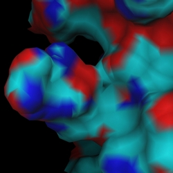
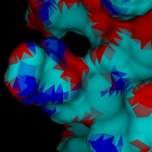
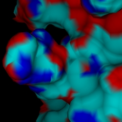
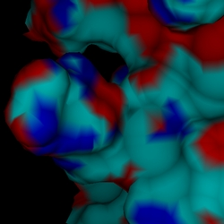

|
The command in DINO to output POVray format is:
dino> write file.pov [(-patch | -smooth | -v35)] [-nocolor]
Either one or none of the additional parameters can be specified; this means
that
there are 5 different ways to generate a POVray file! What is the difference
between them ? This effectively boils down to the way triangles are written out.
One of them, -nocolor, is discussed in the section Predefined Textures. The other four are explained
below.
Most of the objects in DINO consist of triangles, and frequently each corner of
a triangle has a different color, which is interpolated across the triangle
face. And this is the caveat in POVray: triangles cannot be specified with
different colors at each corner, only with a single one (actually, a single
texture) per face. This will lead to ugly effects, as shown below.
The left image is a snapshot directly from DINO, showing smooth color
interpolation. The image on the right is the rendered POVray scene, as written
out from DINO without any parameters specified; all the triangles are unicolored.

DINO output
|

Normal POVray 3.1g output
|
As a workaround, three different choices are offered:
1. In-build macro
With the flag -smooth, the output file.inc will contain a macro which
produces the smooth coloring during POVray rendering. This macro was designed by
Chris Colefax and slightly modified to work
in this case.
2. POVray patch
I have designed a patch for POVray v3.1g which implements a new object type to allow
smoothly colored triangles. You can find it and all background information
here. The flag -patch produces
output suitable for the patch.
3. POVray v35 output
The new POVray version 3.5 includes the smooth_color patch, but uses a totally different syntax. If you have this version installed, use the -v35 flag to generate appropriate output.
Detail:
Nathan Kopp has rewritten my smooth_color_triangle to allow
three different textures to be placed at each triangle vertice, not only
colors. The caveat, however, is that the textures need to be predefined. This
creates a problem: One would like to specify a color for each vertex, but
without creating a new texture for each vertex (leading to insane memory usage).
DINO solves this problem by collapsing the colorspace of the object to 256
colors, which are predefined in 256 textures. For practical purposes, this color
reduction will be OK. NOTE: the colors are only reduced at the edges. The
interpolation still produces all shades!
Which workaround to choose ?
The results of all three workarounds are visually pleasing (see below).
The memory requirements for the smoothing macro, however, are unfortunately
very high, and easily get prohibitive for average object sizes. One should probably go with the new POVray version 3.5
|

|
Smooth Macro (-smooth)
Parsing 6s
Rendering 20s
Memory usage 15.9MB
|
|
|
Patched POVray 3.1 (-patch)
Parsing 1s
Rendering 19s
Memory usage 2.4MB
|
|

|
POVray 3.5 (-v35)
Parsing 1s
Rendering 27s
Memory usage 2.0MB
|
(c) 2001-2005 Ansgar Philippsen
|
){kind=link}
){kind=link}
){kind=link}
){kind=link}
){kind=link}